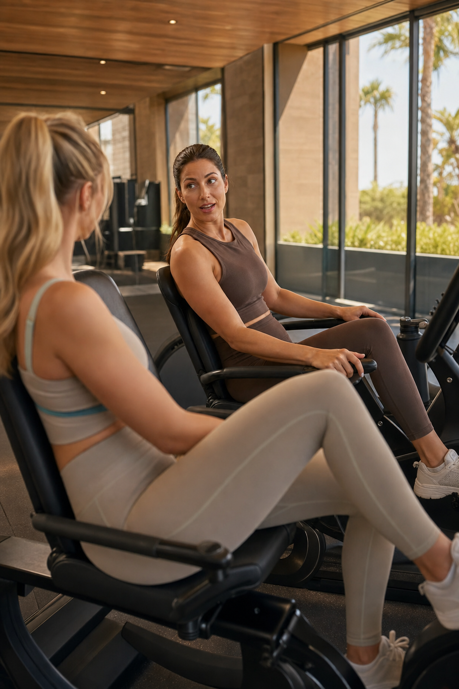
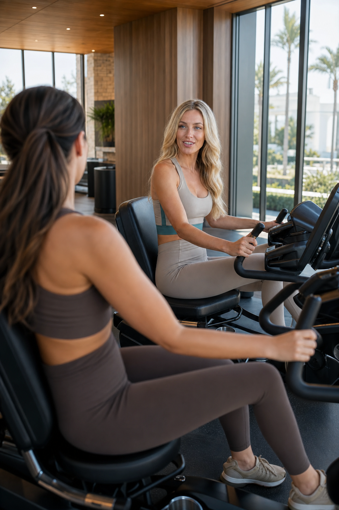

Candid Camera Direction Board

CURRENT REVIEW LOCK CANDIDATE. Camera looks over Character B's blurred blonde shoulder/hair toward Character A. Character A stays fixed on Character A's assigned recumbent bike and same seat/side. Character B stays fixed on Character B's assigned recumbent bike and same seat/side. No seat swaps, bike swaps, side swaps, or repositioning. Same brunette face, ponytail, dark mocha/taupe luxury athleisure, same blonde foreground wardrobe accent, same gym layout. Wider framing is designed to show lower legs and bike mechanics so both riders can visibly pedal in video while the active speaker's mouth remains clear for lip sync.

CURRENT REVIEW LOCK CANDIDATE. Camera looks over Character A's blurred brunette shoulder/ponytail toward Character B. Character A stays fixed on Character A's assigned recumbent bike and same seat/side. Character B stays fixed on Character B's assigned recumbent bike and same seat/side. No seat swaps, bike swaps, side swaps, or repositioning. Same blonde face, beach-wave hair, sand/taupe luxury athleisure with muted teal accent, same brunette foreground wardrobe, same gym layout. Wider framing is designed to show lower legs and bike mechanics so both riders can visibly pedal in video while the active speaker's mouth remains clear for lip sync.